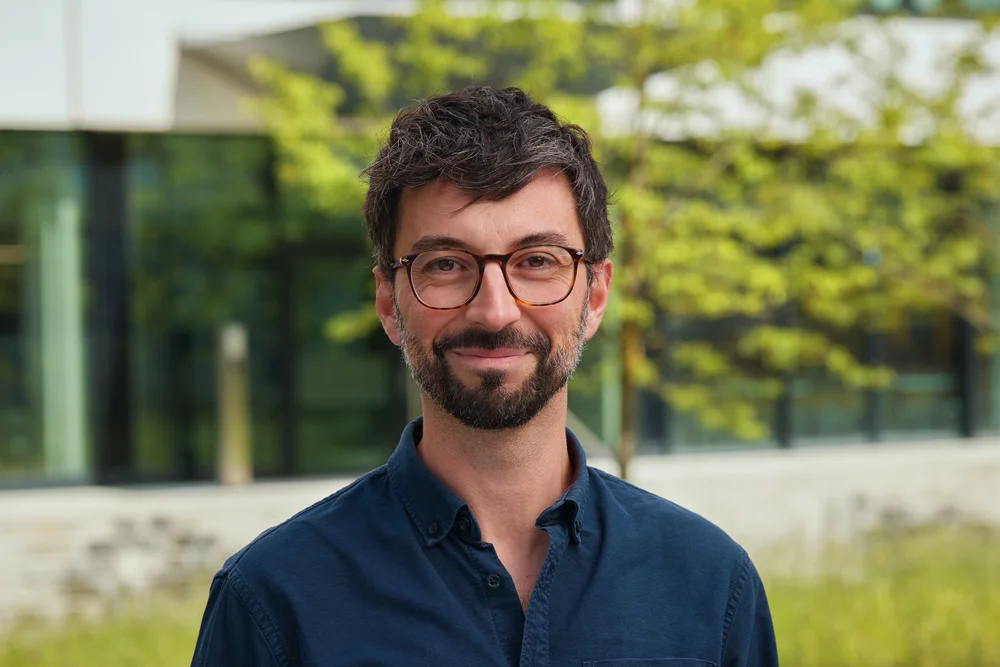

Keynote speakers
DAVIDE RISSO
Davide Risso is Professor of Statistics at the University of Padova, where he leads a research group working at the intersection of statistics, bioinformatics and computational biology, with a strong emphasis on reproducible research and open-source software development. The group develops statistical and computational methods for emerging high-throughput technologies and implements them in scalable, user-friendly, open-source software packages. They also collaborate with experimental biologists to contribute to biological discoveries in diverse fields such as developmental biology, neuroscience and cancer biology.
LUCA GIORGETTI
Luca Giorgetti is a senior group leader at the Friedrich Miescher Institute for Biomedical Research. His group combines wet- and dry-lab approaches to unravel the interplay between chromosome structure and transcriptional regulation.

Davide Risso
Davide Risso is Professor of Statistics at the University of Padova, where he leads a research group working at the intersection of statistics, bioinformatics and computational biology, with a strong emphasis on reproducible research and open-source software development. The group develops statistical and computational methods for emerging high-throughput technologies and implements them in scalable, user-friendly, open-source software packages. They also collaborate with experimental biologists to contribute to biological discoveries in diverse fields such as developmental biology, neuroscience and cancer biology.
Luca Giorgetti
Luca Giorgetti is a senior group leader at the Friedrich Miescher Institute for Biomedical Research. His group combines wet- and dry-lab approaches to unravel the interplay between chromosome structure and transcriptional regulation.